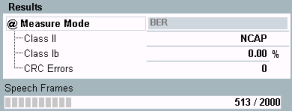

Mode BER
In "BER" mode, the BER result is determined for class Ib bits and for class II bits.
Loop mode B is used, so the internal test loop of the MS is closed after channel decoding.
Note that AMR full rate speech frames contain no class II bits, so select a different speech channel coding if you want to measure the BER for class II bits.
For background information, see "Test Loops" and "Frame Structure for BER CS Tests".

BER CS results (BER mode)
- Class II: BER class II, percentage of received erroneous class II bits (relative to total number of received class II bits)
- Class Ib: BER class Ib, percentage of received erroneous class Ib bits (relative to total number of received class Ib bits)
- CRC errors: number of speech frames with failed CRC check. The check is performed in the R&S CMW on looped-back speech frames. Bits in frames with CRC error do not contribute to the BER.
- Speech frames: number of already evaluated speech frames without CRC error and total number of speech frames to be evaluated.